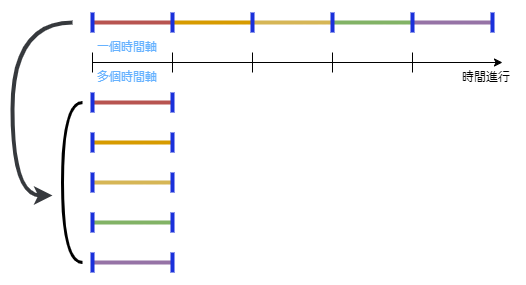
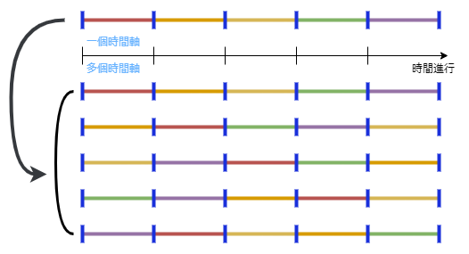
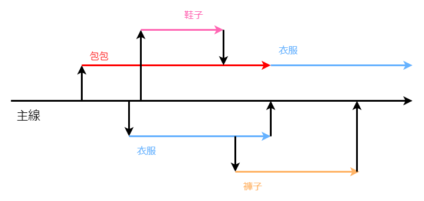
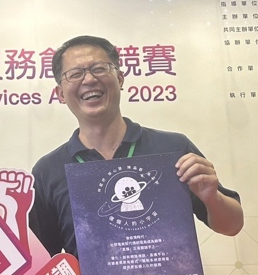

CYIM 112-1 B05
億個人的小宇宙
Myriad Universes Within
徐心慧 林庭妤 吳孟軒 陳品叡
指導老師：李國誠
專題緣起
自2020年COVID-19出現大規模爆發後，疫情驅使各行各業展開數位轉
型，全球化、雲端化、個人化三個維度開始受到重視。IBM所提出的服務科學
觀點中，也強調服務科學化、科技服務化的重要性。
在後疫情時代，雲端視訊平台、直播平台…等快速崛起，混合辦公室是後
疫情時代最具競爭力的辦公方式，加上遠距教學之普及，視訊平台及相關軟體
服務在此環境下仍會持續成長，同時我們關注到後疫情時代，社群電商取代傳
統電商成為顯學，「直播」正是關鍵字之一。而此專案，基於以上現象，希望能
優化、創新網路視訊、直播平台，改變產業原有模式，幫助此專案之系統使用
者，提供視訊、直播觀看者提供更加個人化的服務。
「平行宇宙」是一個假設的獨立存在平面，每個宇宙都有著自己獨特的歷
史和現實，而所有潛在平行時空之和則稱作「多重宇宙」。儘管目前尚無法證明
多重宇宙的存在，但這個概念仍然激發了許多科學家、哲學家和作家的想像
力，同時也激發了我們此次專案的構想，試圖將多重宇宙之概念運用在實際生
活中。
基於多重宇宙的概念，我們小組提出「億個人的小宇宙」專案，此專案針
對網路視訊直播平台進行優化、升級，將產業原有的「一對多」模式轉變為很
多個「一對一」(圖一)，達成縮時多工的效果，又或者將原有的時間軸進行切
割錯置(圖二)，希望一個人能在同樣的時間區段，透過分身的存在，能同時完
成許多事情，一次性的針對不同訴求之觀看群眾，提供相對應的服務，進而形
成一個多重宇宙。系統除了分身功能外，也提供分眾、即時數據分析及問題回
覆之功能，以利系統使用者提供客製化、個人化服務。
為達到所謂的多重宇宙的空間能力，分身效果成為我們技術上的追求，分
身須具備與使用者相似度極高的表現方式與行為模式，換言之，模型之訓練及
數據蒐集的真實性尤為關鍵，而人工智慧、機器學習則是我們此次專案之技術
亮點。且現代社會的生活節奏愈來愈快，人類越來越講求效率，該如何最佳化
地去時間運用、提高效率，無疑是當代社會重要的課題之，同樣也是我們小組
的訴求之一。

圖一

圖二
專題特色
1. 虛擬分身：
透過透過串接生成式AI、深度學習和機器學習技術，虛擬分身具備與
直播者相同的表達能力，藉由虛擬分身，我們就可以根據觀看者的需求
產生不同的分支，為每位觀眾提供個人化的服務。
2. 分眾管理：
利用觀眾留言與訂單的追蹤實施客群分析，根據不同客群需求進行區
隔，透過系統化的資料分析、整合，更有效指派、管理分身。
3. 即時互動性：
透過模型訓練、生程式AI的串接，分身將獲得與直播者相同的表達能
力藉由AI分身，我們就可以根據觀看者的需求產生不同的分支，為每
位觀眾提供個別化的服務。
4. 問題分析：
直播觀看者在提出疑問後，針對問題進行分析、分級，進行即時判定，
若系統判定問題可由分身直接給予答覆，則指派分身進行回答；若系統
判定問題需交由系統使用者進行回答，則會通知系統使用者進行後續處
理。
5. 時序調整：
利用下圖來舉例時序調整錯置，在一趟直播中，依據觀看者的喜好，系
統會隨時間段來產生不同的分身，而產生出的分身分為兩種，一是透過
模型所訓練出來的虛擬分身，二則是保存下來的直播片段，結合同步與
非同步的資源，根據觀看者需求，進行片段的錯置，直播與非同步同時
進行，以達最高效率。

專題貢獻
學術界貢獻
AI和機器學習的創新應用：在創建虛擬分身方面使用先進技術。
新理論框架：為計算機科學和數位通信提供新的理論模型。
數據分析與用戶行為研究：分析用戶數據和行為，有助於用戶體驗和數位行銷研究。
實務界貢獻
提升用戶體驗：在多個虛擬空間中同時互動，提高參與度和效率。
定製化和個性化：滿足數位服務個性化需求。
市場潛力：廣泛適用於不同行業，為線上通訊和商業提供新機會。
比賽經歷
112年度第五屆人工智慧與大數據創意競賽 入圍
2023桃園新創之星-創天下競賽 報名
111-2資訊管理學系專題初賽 B組第四名
2023第一屆解決未來問題能力競賽 入圍
2023第28屆大專校院資訊應用服務創新競賽-產學合作組三
112-1資訊管理學系專題複賽 B組第一名
相關影音
111-2資訊管理學系專題初賽
2023第28屆大專校院資訊應用服務創新競賽
×
